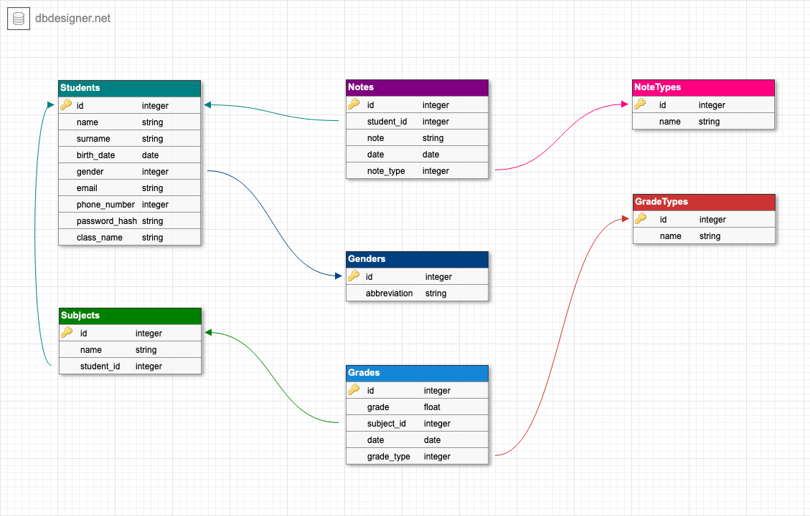

Come progetto per il Master in Programmazione Web ho deciso di realizzare un'applicazione web, che faccia da esempio sul come implementare le già esistenti app mobile di WeStudents sul web.
Ho scelto di realizzare un progetto per la startup WeStudents perchè il tipo di prodotto che offrono è stato uno strumento fondamentale per gestire la mia vita scolastica durante le scuole superiori.
Ho optato per un'applicazione full-stack in modo da comprendere tutte le conoscenze acquisite durante il mio percorso di apprendimento, intrapreso prima e durante le Super Guide di start2impact.
./server/config/mysql.js.
CREATE DATABASE westudents;
CREATE USER 'westudents_user'@'localhost' IDENTIFIED BY 'password_sicura';
ALTER USER 'westudents_user'@'localhost' IDENTIFIED WITH mysql_native_password BY 'password_sicura';
GRANT ALL PRIVILEGES ON westudents.* TO 'westudents_user'@'localhost';
FLUSH PRIVILEGES;
create-table-mysql.sql per creare le tabelle.web-student-app/).npm i.npm start.cd client.npm i.npm run serve e accedere alla pagina http://localhost:8080.Per progettare il database ho utilizzato lo strumento gratuito online DbDesigner.net. Il progetto logico è il seguente:
